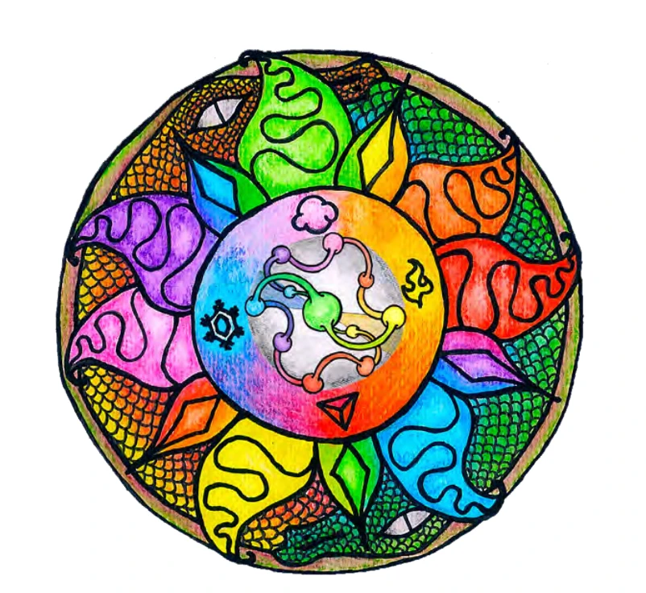
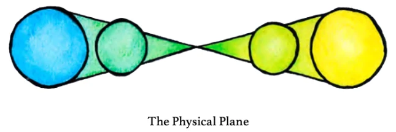
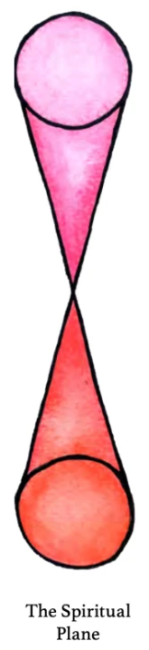
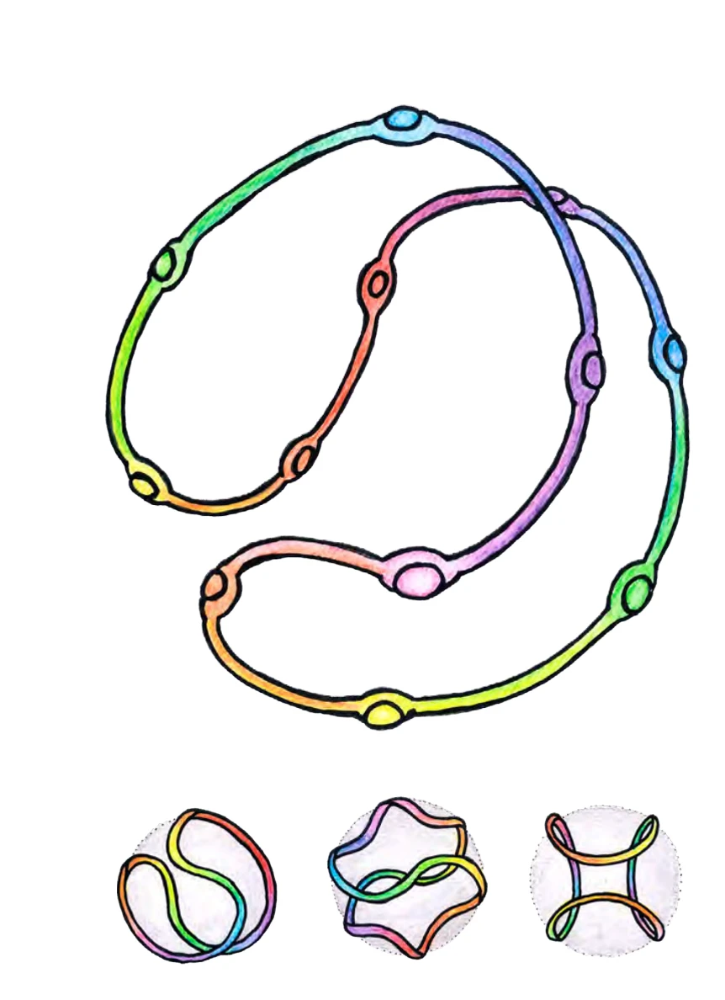
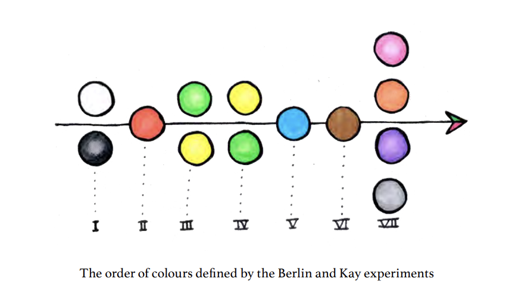
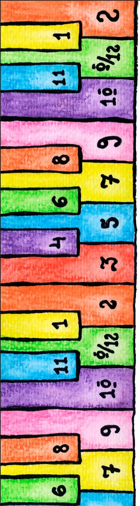
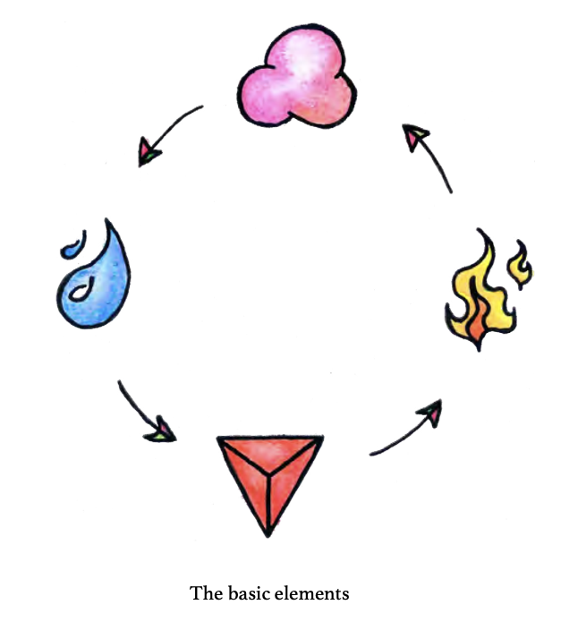
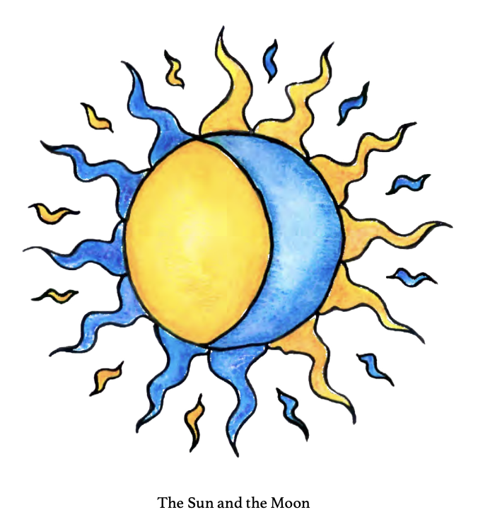

O método Croma-Sônica une som e cor numa mesma esfera de relações. Os 12 semitons da escala cromática são dispostos num círculo de 12 cores, tendo como centro de equilíbrio a nota Ré (D) = Verde 0. As sete naturais (teclas brancas: Ré, Mi, Fá, Sol, Lá, Si, Dó) são representadas por círculos; as cinco ultravioletas (teclas pretas) por triângulos. Cada ultravioleta tem a mesma cor de uma natural — Yellow[1] = Yeluv[1], Violet[4] = Viluv[4], Green[6] = Gruv[6], Orange[8] = Oruv[8], Blue[11] = Bluv[11] —, de modo que o ciclo das cores dá duas voltas ao longo dos 12 tons.
Este visualizador escuta o áudio em tempo real, extrai o cromagrama (energia de cada classe de nota, afinação A4 = 440 Hz), identifica a nota dominante e seus harmônicos, e traduz tudo em cor, forma e movimento.

O índice Ar/Terra combina: correlação maior × menor do perfil tonal (Krumhansl), centroide espectral (brilho) e BPM.
Como a cruz astrológica (símbolo da Terra), o Sentirama é a interseção de dois planos — e nós estamos no ponto de cruzamento, entendido como a frequência base, a “tônica” da nossa harmonia pessoal.







Nota: o microfone exige contexto seguro — abra a página via https:// ou http://localhost (ex.: python3 -m http.server). As posições 3D intermediárias no Sentirama (laranjas, violetas e o tom espelho de cada nota em torno da tônica) e a fórmula do índice Ar/Terra são interpretações visuais deste aplicativo.